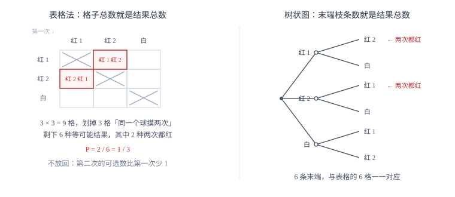

求概率的方法
概率等于目标结果数除以全部等可能结果数。公式只有一行，难点全在「不重不漏」地把结果数清点出来：两步用列表，三步用树状图，先分清放回还是不放回。
| 所属主题 | 概率 |
|---|---|
| 所属模块 | 统计与概率 |
| 课标学段 | 第四学段（7~9 年级） |
| 前置知识 | 事件的概率 |
| 核心素养 | 数据观念推理能力 |
教材定位
人民教育出版社《人教版（2024版）义务教育教科书·数学》
九年级下册第34章 随机事件的概率34.2 用列举法求概率
对应九下 34.2 用列举法求概率：列表法与树状图。
说明
如果一个试验有 n 种可能出现的结果，并且每种结果出现的可能性都相同，其中事件 A 包含 m 种结果，那么事件 A 发生的概率为 P(A)=m/n。这个式子用起来很简单，但它有两个不能省的前提：结果总数有限，且每种结果等可能。少一个前提，m/n 就只是个数比，不再是概率。
把结果数清点出来的工具有三种，按试验的步数选。一步试验直接列举；两步试验用列表，横竖两个方向各代表一次试验，格子里写结果，格子总数就是全部结果数；三步及以上用树状图，每往下一层就是多做一步，最末端的枝条数就是结果总数。三种工具的目标一致：把所有等可能结果一个不漏、一个不重地摆出来，然后数出目标结果有几个。
使用场景
摸球是这类题的原型。同一个袋子里摸两次，如果摸完放回，每次都是从同样多的球里选，两次相互独立，结果数是 n× n；如果不放回，第二次能摸的球少了一个，结果数是 n× (n-1)。题目里有没有「放回」「搅匀后再摸」这几个字，直接决定分母，读题时必须圈出来。
掷骰子、转转盘、抽卡片、抽签，本质都是同一个模型：一步有几种等可能结果，做几步就乘几次。凡是题目出现「先……再……」「第一次……第二次……」，就先数步数，再决定用列表还是树状图。
注意点
「等可能」必须自己验证。转盘上扇形大小不一样、袋子里球的大小不同、骰子不均匀，都不能直接套 m/n。命题里如果只说「任意摸出一个球」而没提球除颜色外完全相同，就要先确认这一点，否则结果不可用。
放回与不放回不能混。同一个问题换个字眼，分母就变了：3 个球摸两次，放回是 9 种结果，不放回是 6 种。很多错误的答案都是分母用对了、分子数错了，或者反过来。
证明

图 1：两步试验用列表（左），三步及以上用树状图（右）。两幅图的总数都是 6，目标数都是 2
证明
结论 1等可能事件概率公式的依据只有两条：各结果分到的机会一样多，且所有结果的机会加起来是 1。
既然 n 种结果等可能，那么每一种结果分到的机会必须一样多，而所有结果的机会加起来是 1（必然有一个会发生）。
关键一步这两条正是「机会」这个说法本身的内容：等可能保证每一种结果分到的机会一样多，「必然有一个会发生」保证所有结果的机会加起来是 1。有了它们，才能把 1 平均分成 n 份，公式才立得住；缺了任何一条，m/n 就退化成个数比。
结论 2把总机会 1 平均分成 n 份，每份是 1/n；事件 A 含 m 种结果，故 P(A)=m/n。
把 1 平均分成 n 份，每份就是 1/n。事件 A 包含 m 种结果，它发生的机会就是这 m 份相加，共 m/n。整个推导只用到「等可能」和「机会相加为 1」这两条。
关键一步这一步靠的是「份额可以相加」：每个结果分到 A 的可能性份额都是 1/n，m 个这样的份额加起来就是 m/n。整个推导只用到「等可能」和「机会相加为 1」这两条，因此公式的使用范围也正好被这两条框住，超出这两条 m/n 就只是个数比。
结论 3结果不能随便归并：归并会把不等可能的情形并成一项，破坏等可能前提，使公式失效。
三球（红 1、红 2、白）摸两次不放回，若按颜色配对把结果并成「两红」「一红一白」两项：两红只有 1 种配对（红 1 红 2），一红一白却有 2 种（红 1 白、红 2 白），两项并不等可能，直接拿它们当结果，公式就失效了。正确做法是把同色的球也看成不同的球，列出 6 种等可能的有序结果（红1红2、红2红1、红1白、红2白、白红1、白红2），两次都红占 2 种，P=2/6=1/3。
关键一步公式要求的是「每一种结果一样大」，而按颜色配对归并，把大小不同的具体情形混成了一项：两红 1 种配对、一红一白 2 种配对，并不等可能。必须把同色球也编号，拆到 6 种等可能的有序结果那一层，才能套公式。
结论 4列举时必须让每一种结果「一样大」，这正是列表法要横竖分开、树状图要一层一层画到底的原因。
表格里每个格子代表一次具体的先后顺序，格子与格子之间才是等可能的。这就是列表法要横竖分开、树状图要一层一层画到底的原因。
关键一步「一样大」的判定标准是每一种结果都对应同样多的具体情形。表格里每个格子代表一次具体的先后顺序，格子与格子之间才是等可能的；列表法横竖两个方向各代表一次试验、树状图每往下一层就是多做一步，都是为了让末端的每一片叶子对应同样大的情形。
动手实验
拿两枚硬币同时掷 40 次，记录「两正」「一正一反」「两反」的次数。结果会看到「一正一反」大约占一半，而不是三分之一。原因是它包含「正反」和「反正」两种情形，另两种各只含一种。这个实验能直接把「归并结果」的错误暴露出来。
解题思路
解概率题固定三步。第一步定步数：题目做了几次抽取或投掷，就是几步。第二步列结果：一步列举、两步列表、三步及以上画树状图，每列一个结果都要标明是哪一次取到了什么，不能只写颜色。第三步数数代入：先数分母（全部结果数），再数分子（满足条件的结果数），最后约分。
数分子时用「逐条对照条件」的办法，不要凭印象。把每个结果写成有序对（第一次，第二次），按条件一个个打勾，勾完再数，比在脑子里估算可靠得多。遇到「至少」这类词，改用反面数更快：P(\text至少一个)=1-P(\text一个都没有)。
按场景的例题
例 1（场景：竞技与游戏） 摸球游戏的中奖判定
袋中有 2 个红球（记为红 1、红 2）和 1 个白球，除颜色外完全相同。不放回地摸两次，求两次都摸到红球的概率。
解：不放回，第一步有 3 种选择，第二步只剩 2 种，结果总数为 3× 2=6：红 1 红 2、红 1 白、红 2 红 1、红 2 白、白红 1、白红 2。两次都红的结果有 2 种：红 1 红 2、红 2 红 1。所以 P=2/6=1/3。注意不能把「红红」当成 1 种结果，它实际包含 2 种先后顺序，归并后六个结果就不再等可能。
答：1/3。
例 2（场景：方案选择） 两人约定掷骰子定胜负
两人约定：同时掷两枚质地均匀的骰子，点数和为 7 则甲赢，点数和为 8 则乙赢。分别求出甲、乙获胜的概率，并判断这个规则是否公平。
解：每枚骰子有 6 种结果，两枚共 6× 6=36 种，且每种等可能。和为 7 的有 (1,6)、(2,5)、(3,4)、(4,3)、(5,2)、(6,1)，共 6 种，P(\text甲赢)=6/36=1/6。和为 8 的有 (2,6)、(3,5)、(4,4)、(5,3)、(6,2)，共 5 种，P(\text乙赢)=5/36。两个概率不相等（6/36≠5/36），所以规则不公平，甲获胜的机会更大。要改成公平规则，只需让双方对应的结果数相等：「两枚点数相同」共 (1,1) 到 (6,6) 六种，与「和为 7」的 6 种相等，把乙赢的条件换成它，双方概率都是 6/36=1/6。
答：P(\text甲赢)=1/6，P(\text乙赢)=5/36，规则不公平；把乙的条件换成「两枚点数相同」即可公平。
例 3（场景：生活优化） 三人依次抽签决定值日顺序
3 张签中只有 1 张写着「中」，甲、乙、丙三人依次不放回地各抽一张。求「甲没抽中、乙抽中」的概率。
解：三人依次各抽一张，结果总数为 3× 2× 1=6，六种排列等可能。要求甲不中、乙中，则甲拿的是两张非中签之一（2 种），乙拿的是中签（1 种），丙拿剩下那张（1 种），共 2× 1× 1=2 种。所以 P=2/6=1/3。也可以分步算：甲不中的概率为 2/3，此时剩下 2 张中恰有 1 张中签，乙抽中的概率为 1/2，相乘得 2/3×1/2=1/3，与列举结果一致。
答：1/3。
常用推论
必然事件的概率为 1，不可能事件的概率为 0，随机事件的概率严格介于 0 与 1 之间。任何算出大于 1 或小于 0 的结果，都说明分母或分子数错了。
求「至少」型概率，先算它的反面再拿 1 去减，通常比正面列举省一半计算量。
放回与不放回的分母相差一个因子：n 个对象取两次，放回是 n^2，不放回是 n(n-1)。记住这个差别，比每次重新列举更快。
易错点
错3 个球（2 红 1 白）不放回摸两次，答「结果有红红、红白、白红三种，所以两次都红的概率是 1/3」。
为什么错答案碰巧对了，但过程错了。红红只对应 1 种具体情形，红白对应 2 种，白红对应 2 种，「三种结果」并不等可能。换一个问法（比如求一红一白的概率）就会算成 1/3，而正确答案是 4/6=2/3。
正确把两个红球区分开（红 1、红 2），列出 6 种等可能结果，再按条件数分子。
错掷两枚骰子求和为 7，答「有 1+6、2+5、3+4 三种，所以概率是 3/36」。
为什么错把 (1,6) 与 (6,1) 合并成了一种，但两枚骰子可区分，这是两种不同的结果。分子漏数一半。
正确和为 7 的结果共 6 种，概率为 6/36=1/6。
错题目写「摸出一球，不放回，再摸出一球」，仍按放回计算，分母取 3× 3=9。
为什么错不放回时第二次只剩 2 个球可选，分母应为 3× 2=6。分母取大，概率被算小。
正确先圈出题中的「放回」或「不放回」，再定分母：放回取 n^2，不放回取 n(n-1)。
直观理解
概率不是「猜」，而是把可能性摊开来数。表格和树状图就像把一副牌全部摊在桌面上：只要摊得整齐、不重不漏，答案就是数出来的，不靠感觉。而「等可能」是这张桌子的地平线——地平线歪了，数得再认真也是错的地图。